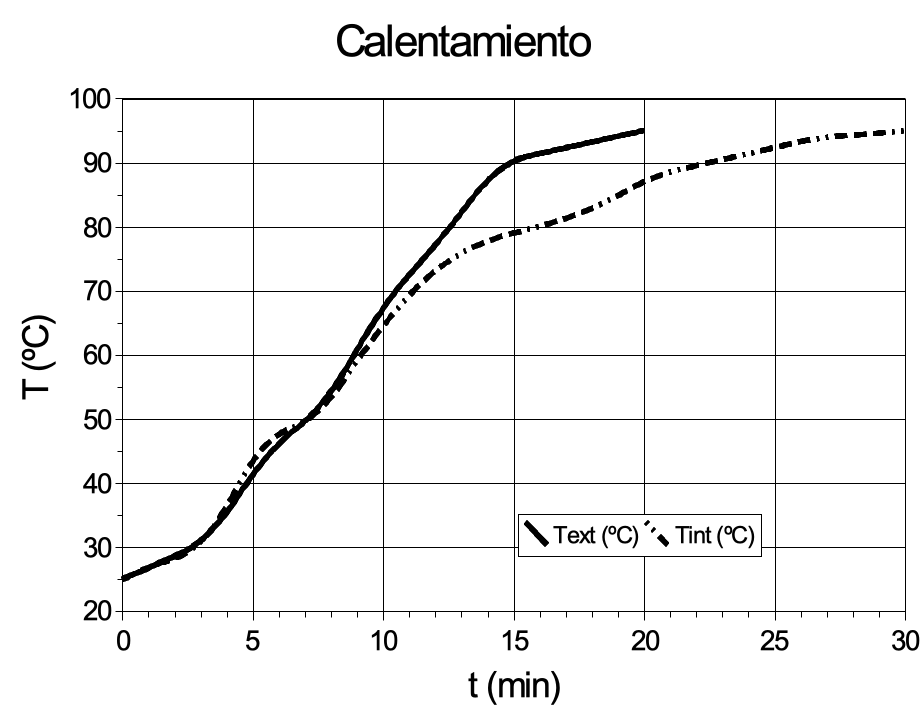

8 Conservación por calor
1
Se desea esterilizar un alimento envasado. Como objetivo de la esterilización se desean lograr 12 reducciones logarítmicas de una variedad de Clostridium botulinum de z = 6.7 °C y D₁₂₁ = 0.26 min. La curva de penetración de calor en el centro del envase es la siguiente:
¿Es suficiente el tiempo de tratamiento? ¿En cuanto habría que cambiar el tiempo en que se mantiene la temperatura a 115 °C para lograr las 12 reducciones logarítmicas?
2
Se somete un producto a una esterilización térmica en escalones según la siguiente tabla:
| t (min) | T (°C) |
|---|---|
| 0 | 77 |
| 3 | 95 |
| 7 | 110 |
| 10 | 128 |
| 12 | 120 |
| 15 | 90 |
| 18.5 | 20 |
Determinar:
z, D₁₂₁․₁, E𝖺, k₀
N al final de cada etapa de temperatura constante
Valores de L y n de todo el tratamiento térmico
Datos:
El microorganismo más termoresistente presenta: D₁₁₀ = 19.26 min; D₁₂₅ = 0.15 min y N₀ = 2.5·10⁶ ufc/g.
3
El Sr. Barrufet, magnate y presidente de uno de los principales holdings del sector agroalimentario, tuvo a bien recibir el año pasado a los alumnos de la UdL. La recepción tuvo lugar en una de sus fábricas, concretamente la dedicada a conservas vegetales de Verdú.
Entre los diversos productos allí elaborados, destacan las conservas de las setas autóctonas de la zona (Bolletus terrafermae, X.), cuya exquisitez no tiene parangón. Estando en la sala de autoclaves, comentaba airadamente nuestro anfitrión las vicisitudes por las que pasó un licenciado en ciencia y tecnología de alimentos que contrató “ex profeso” hasta establecer el programa de esterilización de las citadas setas. (Lo que se le olvidó comentar fue que lo despidió una vez tuvo conocimiento de los baremos de esterilización a aplicar al producto y de sus pretensiones económicas).
Dicho programa conseguía la esterilidad comercial perseguida y era el que se estaba aplicando en los autoclaves durante la visita a las instalaciones. En líneas generales – decía orgulloso el Sr. Barrufet – consiste en introducir los botes de las setas a una temperatura de 60 °C (en el punto crítico) en el autoclave y elevar la temperatura linealmente mediante la inserción de vapor hasta 125 °C. Una vez alcanzado este valor, se mantiene constante durante 4 minutos. A continuación, se enfría linealmente a contrapresión hasta unos 60 °C. En definitiva, se consigue un F0 total de 13.5 min. La fase de calentamiento y enfriamiento representan un 2 y un 1 % del valor anterior.
Con estas y otras disquisiciones estaba nuestro personaje cuando, de pronto, se disparó la horrísona alarma de uno de los autoclaves. Todo el grupo visitante y personal laboral próximo al lugar del incidente, precedidos por un asustado y algo contrariado presidente del holding, corrimos en tropel hacia aquel autoclave a ver que ocurría.
–¡¡Que vengan los de mantenimiento!! - gritó con autoridad el Sr. Barrufet.
Al instante llegaron (asombroso).
Se había producido exactamente al minuto de iniciarse el programa de esterilización, una fuga de vapor en la junta entre la conducción del fluido calefactor y el propio autoclave.
Mientras se reparaba la avería, nervioso, y sin duda recordando en qué malahora no accedió a las condiciones del técnico que despidió, casi sollozando, el Sr. Barrufet decía:
–¿Y qué haremos ahora? Nunca me había pasado esto. Los de mantenimiento me arreglan el escape rápido – por la cuenta que les traía –, pero ¿cómo acabo después de la avería el programa de esterilización? ¿Podrían ayudarme? Contrato fijo a uno de estas chicas o chicos, si me dicen que debo hacer.
Naturalmente supieron qué había que hacer. Se fueron al registrador de la temperatura y anotaron los siguientes datos correspondientes al período de avería, justo entre el primer minuto del programa inicial y el momento en que la temperatura empezó a subir otra vez linealmente, según el programa normal:
Calentamiento:
| t (min) | T (°C) |
|---|---|
| 0 | ¿? |
| 0.5 | 111.5 |
| 1.0 | 115.0 |
| 1.5 | 116.5 |
| 2.0 | 117.0 |
| 2.5 | 117.5 |
| 3.0 | 117.0 |
| 3.5 | 116.5 |
| 8.0 | 95.0 |
Enfriamiento:
| t (min) | T (°C) |
|---|---|
| 4.0 | 115.0 |
| 4.5 | 112.5 |
| 5.0 | 107.5 |
| 5.5 | 100.0 |
| 6.0 | 97.5 |
| 6.5 | 96.0 |
| 7.0 | 95.3 |
| 7.5 | 95.0 |
Con esta información y la aportada inicialmente por el Sr. Barrufet fueron capaces de:
Calcular z, fh, fc, temperatura en el punto crítico en el momento de iniciarse la avería
Trazar la curva de penetración de calor en el punto crítico del programa normal de trabajo, así como evaluar el valor letal de cada una de las zonas.
Hacer lo mismo pero para aquella azarosa partida y garantizando el mismo grado de esterilidad que se conseguía en el caso anterior.
Epílogo: Como todos los alumnos fueron capaces de resolver el problema planteado por el Sr. Barrufet, al final tuvieron que decidir quién se quedaba a piedra, papel o tijera. La fortuna y la intercesión del santo local hicieron justicia con el empollón del grupo, Pere Clever, quien me imagino continua en la empresa todavía, si el Sr. Barrufet no ha sufrido un nuevo acceso de racanería.
4
La conferencia del profesor de Procesos sobre conservas vegetales había sido muy aburrida, pero las preguntas de una de las señoras del público te hicieron reaccionar. La señora en cuestión (a), una pagesa de toda la vida, dijo que la conferencia era muy interesante, pero que, a ella, lo que le preocupaba era que los botes de conserva que fabricaba le salieran todos bien, la mayoría de las veces, pero de vez en cuando algunos le salían defectuosos. La señora explicó que ponía los botes, inicialmente a 25 °C, en un baño maría cuando el agua entraba en ebullición, y los dejaba durante 30 minutos. Entonces los sacaba y enfriaba con un chorro de agua fría hasta unos 25 °C. Siempre lo hacía igual.
“Esta situación la conocemos muy bien”, explicó el profesor. “Lo hemos estudiado y sabemos que con los envases que utilizan ustedes, el contenido se calienta y se enfría según la ley siguiente”. Enseñó la transparencia número 1. “Esto consume parte de los 30 minutos. El resto del tiempo podemos asumir que el contenido del envase está, efectivamente, a la misma temperatura que el agua en ebullición. Esto es lo que hace que su producto se conserve. Pero si los resultados son tan diferentes es que algo ha fallado. ¿Puede decirme usted si ha observado alguna cosa especial cuando ha fabricado las conservas que se le deterioran? ¿Puede ser que las fabrique los días de lluvia (A1)? Ya sabe que cuando llueve suele haber bajas presiones, y que el agua hierve a temperatura más baja; por este motivo el tratamiento térmico que realiza usted no siempre es igual”. La señora no estaba segura si esta era la causa, pero dijo que pudiera ser, que quizás fabricaba las conservas defectuosas los días de lluvia…
“¿Lo ve?”, dijo el profesor. “ Debería hacerlas sólo los días que haya anticiclón (A2). Y, para acabar, les mostraré por curiosidad, como reacciona el microorganismo responsable de estas alteraciones con el calor”. Puso la transparencia número 2. Otra señora (B) dijo que era mejor dejarse de puñetas, que lo que ella hacía siempre era añadir sal al agua hasta que, termómetro en mano, hervía a 110 °C, y entonces ponía los botes durante 30 minutos.
Pensaste que seguramente esta señora era más prudente, pero no te convencía la explicación del profesor. Parecía que las oscilaciones de presión atmosférica no daban lugar a cambios tan evidentes. Te propusiste calcularlo. Hiciste una búsqueda de que oscilaciones de presión podían tener lugar, y a qué temperatura hervía el agua a estas presiones. Te Encontraste con el cuadro siguiente:
| Situación | Presión (mbar) | T ebullición del agua (°C) |
|---|---|---|
| Anticiclón | 1030 | 100.4 |
| Normal | 1013 | 100.0 |
| Borrasca | 960. | 98.5 |
Contenido de la Transparencia 1:
Función T/t en calentamiento/enfriamiento: \[T = T_i + f t\]
\(T\): Temperatura (°C)
\(T_i\): Temperatura inicial
\(f\): constante (10 °C para calentamiento, -15 °C para enfriamiento)
\(t\): tiempo (min)
Contenido de la Transparencia 2:
Microorganismo de referencia Población en ufc/100 ml
| t (min) \ T (°C) | 95 | 100 | 105 |
|---|---|---|---|
| 0 | 1000000 | 1000000 | 1000000 |
| 15 | 816000 | 580000 | 250000 |
| 30 | 666000 | 345000 | 63000 |
Contestar a las siguientes preguntas:
Comparar, mediante cálculos, la reducción de microorganismos producida en los tras casos expuestos (A1, A2, B)
¿Crees que la variación producida por la oscilación de la presión atmosférica justifica el aumento de botes alterados?
¿Crees que el método de la señora B es significativamente más efectivo que el de la señora A? ¿Por qué?
Exponer alguna hipótesis alternativa que pueda explicar las diferencias que encuentra las señora A.
5
Eres el técnico de producción de FETGESA, famosa por sus patés de todo tipo, comercializados en envases de lata de 50 y 850 g. Con intención de ajustar el funcionamiento de uno de los sistemas de esterilización en una línea de producción, encargaste a un laboratorio externo unas pruebas de destrucción térmica del microorganismo más termoresistente presente en una serie de muestras del producto. El laboratorio te había proporcionado todas las características de los parámetros de termoresistencia, pero desgraciadamente un técnico del laboratorio ha derramado ácido sulfúrico concentrado sobre el informe, que se ha desintegrado a excepción del fragmento siguiente, que has podido recuperar:
Fecha: 4 de octubre Muestra: Proporcionada por FETGESA (ref. 37/22)
Resultados D₁₁₀ = 36.5 min; D₁₁₈ = 8.5 min; D₁₂₇ = 96 s
Nota: Temperaturas en °C
En este momento llega un analista del laboratorio de la propia fábrica, con un informe sobre la contaminación inicial de la pasta de paté, que da 10 ufc/g.
Si se pretende lograr una contaminación final de 10⁻⁵ ufc/envase, ¿durante cuánto tiempo se deberían mantener los envases a 115 °C para lograrlo? Nota: Los envases son de 50 g y, en este caso, se puede despreciar el efecto de las fases de calentamiento y enfriamiento.
Si se realiza un calentamiento lineal desde 60 a 115 °C en 15 minutos, una fase de mantenimiento y, después, un enfriamiento lineal hasta 50 °C en 5 min, ¿cuánto debe durar la fase de mantenimiento?
6
FETGESA acaba de vender su antiguo autoclave discontinuo que tenía para los envases de 850 g y se acaba de comprar uno nuevo.
Los operarios se disponen a esterilizar un lote de producto con el nuevo equipo y programan el mismo tiempo de mantenimiento que utilizaban en el equipo descartado. Antes de la renovación el producto, que inicialmente se encuentraba a 60 °C, subía linealmente hasta 125 °C en 6 minutos; se mantenía a esta temperatura durante 14 minutos y después se enfriaba, también linealmente, hasta los 60 °C en 8 minutos.
Vas corriendo a avisarles, porque sospechas que con el nuevo autoclave el ciclo de calentamiento-enfriamiento no coincide con el antiguo.
Efectivamente, miras el catálogo de la empresa suministradora y te das cuenta de que son diferentes, ya que sus características son las que se exponen en el siguiente fragmento del catálogo:
AUTOCLAX, S.A.
Características de uso del modelo RIMMER (establecidas para envases de 850 g; ensayo con paté)
Fase de calentamiento: Tiene una duración de 4 minutos. La curva de penetración de calor t/T se ajusta a la siguiente fórmula empírica (válida para 45 °C < T < 155 °C; T en °C, t en minutos):
Fase de enfriamiento: Una vez finalizada la etapa de mantenimiento, la etapa de enfriamiento muestra la siguiente relación t/T:
t (min) 1 2 3 4 5 6 T (°C) 105 90 80 72 64 60
Determinar el tiempo que debe durar la fase de mantenimiento en el nuevo autoclave para que el tratamiento térmico sea equivalente.
Nota: Todas las temperaturas son referidas al punto crítico del envase. Microorganismo de referencia: \(D_{121}\) = 3.9 min y \(z\) = 8 °C.
7
El sr. Barrufet tras un profundo estudio del mercado ha decidido que el futuro de su empresa está en la fabricación de productos dirigidos a deportistas. Para ello en la planta piloto está desarrollando un nuevo producto dirigido a ese mercado. Este producto consiste en una bebida basada en clara de huevo—debido su alto contenido proteico—, en fibra de frutas y una serie de aditivos autorizados: estabilizantes, aromatizantes y colorantes. El sr. Barrufet cree que logrará un buen resultado de ventas basado en una buena campaña publicitaria y en el uso de un ingrediente secreto que marcará la diferencia con el resto de competidores: la musculina. Esta es una hormona extraída de una especie de mono tropical que provoca un aumento exagerado de la masa muscular. Para ser efectiva la musculina debe estar presente en la bebida en una concentración de 15 ppm. La bebida se presentará en botes de 150 g.
El sr. Barrufet te ha contratado como estudiante en prácticas (ya que así le sale más barato) para que diseñes la operación de esterilización térmica de este nuevo producto. Tu nuevo jefe piensa que lo mejor es utilizar los autoclaves discontinuos ya existentes. Estos autoclaves permiten realizar un calentamiento lineal a una velocidad de 8 °C/min, un enfriamiento lineal a -15 °C/min y pueden operar a una temperatura máxima de 127 °C. La temperatura inicial y final de los botes es de 35 °C. También cree que lo mejor es realizar la esterilización a 115 °C o a 127 °C, ya que la musculina es termosensible.
Tras estudiar el problema le dices a tu jefe:
el producto es asqueroso (esto, en realidad, no lo dices solo lo piensas)
no estás de acuerdo con que lo mejor sea realizar la operación a baja temperatura
lo mejor sería comprar un equipo de esterilización en continuo UHT de las siguientes características:
Calentamiento:
| Tiempo (s) | Temperatura (°C) |
|---|---|
| 0 | 98 |
| 0.1 | 104 |
| 0.2 | 111 |
| 0.3 | 127 |
| 0.4 | 135 |
| 0.5 | 138 |
| 0.6 | 140 |
Enfriamiento:
| Tiempo (s) | Temperatura (°C) |
|---|---|
| 0 | 140 |
| 0.1 | 127 |
| 0.2 | 114 |
| 0.3 | 106 |
| 0.4 | 94 |
Una vez realizada ya solo quedaría el realizar un envasado aséptico.
Como consecuencia el sr. Barrufet quiere que le presentes un informe con la respuesta a las siguientes preguntas:
Dar los tiempos de mantenimiento para cada una de los procesos: los propuestos por el sr. Barrufet (esterilizar con los autoclaves a 115 °C o a 127 °C) y el proceso UHT.
Justificar, mediante cálculos, cuál es el mejor de los tres procesos para esterilizar el producto en cuestión.
¿Cuánta musculina se debe añadir a la bebida para que tras el procesado—siguiendo el mejor de los procesos propuestos—se obtenga la concentración deseada?
DATOS:
El procesado busca lograr 12 reducciones decimales de un microorganismo con z = 8.7 °C y D₁₂₁ = 2.3 min.
La musculina tiene un D₁₂₁ = 0.7 min y una z = 50 °C.
8
La fábrica de bebidas refrescantes POCACOSA está produciendo Gugolplex, la bebida isotónica que proporciona energía infinita, basada en una solución de 37 componentes en agua, que se trata térmicamente y gasifica con CO₂ y a continuación se envasa asépticamente.
El departamento de I+D de POCACOSA está ensayando para determinar las concentraciones óptimas de tres componentes secretos, que llama A, B y C. A no es soluble en agua cabonatada, de manera que lo han de descartar y destinarlo a otro producto de la empresa, sin gas. B y C, que tienen una solubilidad baja, son termolábiles y, por tanto, se destruyen parcialmente con el tratamiento térmico, que, por cuestiones de seguridad, se debe realizar después de obtener la disolución. Las pruebas organolépticas han fijado una concentración óptima de B en el producto final de 15 ppm, lo que se consigue saturando la solución inicial con 300 ppm de esta sustancia, mientras que con C se consigue que quede una concentración de 5 ppm partiendo de una solución inicial, no saturada, de 20 ppm. El tratamiento térmico habitual se hace en función de un microorganismo de referencia, que se encuentra presente en el agua (pretratada mediante filtrado biológico), que se encuentra en una concentración de 1 UFC/ml, y se obtiene una concentración final de 10⁻¹⁰ UFC/ml, mediante un intercambiador de placas a 120 °C.
Un día, el sistema de pretratamiento de agua, que permite pasar de una concentración de 10⁴ a la comentada 1 UFC/ml, se estropea, y a ti, como técnico de la planta, te toca cambiar el tratamiento térmico para seguir teniendo la concentración final habitual de microorganismos en el producto (¡ten en cuenta que deberás utilizar agua sin pretratar!). ¿Qué nuevo binomio de t-T deberás aplicar para mantener la concentración final de componente B, que no se puede añadir en mayor cantidad a la solución inicial? ¿Qué medida deberás tomar para garantizar la concentración adecuada de C?
Datos sobre el microorganismo de referencia: D₁₂₀ = 0.7 s; z = 9 °C Datos sobre los componentes: z(B) = 20 °C; z(c) = 15 °C
9
Hoy estás muy contento, acabas de recoger la última nota ¡Ya puedes trabajar! Lamentablemente sólo encuentras una oferta de trabajo, se trata de un contrato-basura en una de las empresas del Sr. Barrufet. Esta empresa es un nuevo intento por parte del Sr. Barrufet por conquistar el mercado de los productos lácteos. En este caso se trata del ‘Yogur Bebible Mediterráneo’. Este producto intenta unir todas las ventajas de la dieta mediterránea en un solo alimento. Sus componentes son yogur, fibra de algarrobo —producto financiado por la Unión Europea— y aceite de oliva.
En tu primer día de trabajo tu nuevo jefe te cuenta, “En primer lugar tienes que acabar de diseñar el procesado térmico del yogur para lograr tener un producto comercializable. Verás, una vez se tiene el producto elaborado, se envasa en recipientes de 250 ml. A continuación se esteriliza en autoclave”. Debido a las esclavistas condiciones laborales del Sr. Barrufet no eres la primera persona en ocupar el puesto que ocupas. Como única información dispones de las notas personales de tu antecesor. Estas notas dicen:
8 de septiembre
La concentración media del microorganismo más termorresistente es de 2·10⁵ ufc/envase.
Debemos encargar ensayos de termorresistencia.
14 de septiembre
El laboratorio de microbiología ha realizado ensayos de termodestrucción sobre las
muestras enviadas. Los resultados son:
t (min) T (°C) N₀ (ufc/ml) N (ufc/ml)
5 100 1.00E+06 3.13E+05
5 105 1.00E+06 4.25E+04
5 110 1.00E+06 1.86E+02
Si el Sr. Barrufet fuera menos avaro además de los análisis nos habrían calculado
el D₁₂₁ y la z
15 de septiembre
El perfil de temperatura del autoclave es el siguiente:
1) Etapa de calentamiento: Temperatura inicial, 25 °C. El calentamiento es
lineal con una pendiente de 6 °C/min.
2) Etapa de mantenimiento a 98 °C
3) Etapa de enfriamiento lineal hasta 20 °C con una pendiente de 10 °C/min
Creo que el Sr. Barrufet ha visto la entrada en la que le llamaba avaro y me va a
despedir…Con el tiempo, visto el sorprendente éxito del producto, el Sr. Barrufet desea aumentar la producción utilizando un sistema de esterilización térmica en continuo. De manera que se obtiene el producto, se esteriliza a 118 °C y, por último se envasa asépticamente. La ventaja de la operación en continuo es que la velocidad de transferencia de calor es muy elevada. Aprovechando el cambio de equipo, también se cambia el anticuado envase de 250 ml por otro de 1 L (tamaño Super-ahorro, destinado a la venta en grandes superficies).
Contestar de manera razonada a las siguientes preguntas:
¿Cuál es la z y el D₁₂₁ del microorganismo más termorresistente?
Calcular el tiempo de la etapa de mantenimiento para la esterilización discontinua
¿Calcular el tiempo de esterilización de la operación continua. ¿Qué concentración microbiana se obtiene tras el procesado térmico? Interpretar ese dato.
10
En una conserva se pueden encontrar tres tipos de microorganismos patógenos. Sus datos de termorresistencia son los siguientes:
| Microorganismo | D121 (min) | z (°C) |
|---|---|---|
| A | 0.2 | 5.5 |
| B | 0.4 | 6.7 |
| C | 0.15 | 4.7 |
Con objeto de reducir el riesgo microbiano se esteriliza el producto en envases de 125 ml a 115 °C. La concentración inicial del microorganismo más termorresistente es de 3·10² ufc/ml. El objetivo de la esterilización es lograr 9 reducciones decimales del microorganismo más termorresistente. El tratamiento consiste en un calentamiento lineal (8 °C/min), etapa de mantenimiento a 115 °C y un enfriamiento, también lineal (-14 °C/min).
Responder de manera justificada a las siguientes preguntas:
Demostrar mediante cálculos que el microorganismo B es el más resistente a la temperatura de tratamiento en el autoclave (115 °C)
¿Qué tiempo hay que programar en el autoclave para que se cumplan los objetivos de esterilización?
Si se decidiese realizar un tratamiento en continuo UHT (etapas de calentamiento y enfriamiento despreciables) a 125 °C, ¿cuál sería el tiempo de tratamiento? ¿El microorganismo A continúa siendo el más termorresistente?
A 125°C, ¿el microorganismo B continúa siendo el más termorresistente?
¿Cuál será la concentración de microorganismos tras el tratamiento? Explicar el significado de este dato
11
En una empresa productora de alimento para animales de compañía tienen que diseñar el proceso de esterilización del producto. Se trata de un alimento con consistencia de paté. Se dispone de datos de termorresistencia del microorganismo objetivo:
| t (min) T (°C) | 114 | 117 | 120 |
|---|---|---|---|
| 0 | 1.0E+06 | 1.0E+06 | 1.0E+06 |
| 4 | 5.8E+05 | 1.8E+05 | 5.2E+03 |
| 6 | 4.4E+05 | 7.9E+04 | 3.7E+02 |
| 8 | 3.4E+05 | 3.4E+04 | 2.7E+01 |
| 10 | 2.5E+05 | 1.5E+04 | < 30 |
Se plantea lograr con el tratamiento térmico 8 reducciones decimales del microorganismo en cuestión tratándolo a 116 °C. Para esterilizar las conservas se utiliza un autoclave con las siguientes curvas t-T de calentamiento y enfriamiento:
Calentamiento
| t (min) | T (°C) |
|---|---|
| 0 | 30 |
| 6 | 40.9 |
| 12 | 85.4 |
| 18 | 111.5 |
| 24 | 116 |
Enfriamiento
| t (min) | T (°C) |
|---|---|
| 0 | 116 |
| 2.5 | 72.1 |
| 5 | 52.1 |
| 7.5 | 47.2 |
| 10 | 45 |
Contestar a las siguientes preguntas:
Demostrar que para el microorganismo a tratar z = 6 °C y \(D_{121}\) = 1.2 min
Calcular el tiempo (real) de la etapa de mantenimiento
¿Dónde se encuentra el punto crítico de esta conserva?
¿Se puede tratar este producto en una instalación en continuo? Si es así, describir dicho equipo
12
El sr. Barrufet te ha contratado para diseñar el proceso productivo de su nueva planta de elaboración de ovoproductos. El principal producto a obtener en esta línea de procesado es huevo entero pasteurizado. A partir de tus estudios de Microbiología de alimentos y de Procesado de alimentos sabes que el objetivo de pasteurización es lograr 9 reducciones decimales (9D) del microorganismo patógeno Salmonella senftenberg y que el tratamiento habitual consiste en someter el producto a un tratamiento a 64.5 °C durante dos minutos y medio. En un libro encuentras que la termoresistencia para este microorganismo es:
| Microorganismo | Temp. de referencia (°C) | D(min) | z (°C) |
|---|---|---|---|
| Salmonella senftenberg | 65.6 | 0.8 a 1.0 | 10 |
Contestar a las siguientes preguntas:
Asumiendo que el calentamiento y el enfriamiento son lineales y que tienen la misma pendiente en valor absoluto, ¿cuánto deben valer las pendientes de enfriamiento y calentamiento para que se garantice el tratamiento propuesto?
Otra posibilidad es realizar un tratamiento de tipo HTST (High Temperature-Short Time) a 70 °C. Experimentalmente se determinan las curvas de calentamiento y de enfriamiento:
Calentamiento
t(min) T (°C) 0 55 0.1 62 0.2 65 0.3 69 0.4 70 Enfriamiento
t (min) T (°C) 0 70 0.1 60 0.2 58 0.3 32 0.4 4 ¿Cuánto tiempo debe durar la etapa de mantenimiento para garantizar la esterilización?
El Real Decreto 1348/1992 de 6 de noviembre, “Reglamentación Técnico-Sanitaria para la producción y comercialización de ovoproductos” dice en su Capítulo VI. Requisitos analíticos:
“Todo lote de ovoproductos se someterá, después del tratamiento, a controles microbiológicos mediante sondeo en los establecimientos de tratamiento, para garantizar que cumplan los criterios siguientes:
Salmonella: ausencia en 25 g o mL de ovoproducto.”
Mediante análisis microbiológicos se sabe que se parte de una concentración inicial de Salmonella de 100 ufc/L, ¿cumplirá nuestro producto con las exigencias de la legislación?
Si se comercializa este producto en envases de 10 L, ¿qué cantidad de microorganismos habrá por envase? ¿Cómo se interpreta este dato?
13
Tienes que diseñar la operación de pasteurización en discontinuo de un producto envasado en autoclave. Sabes que el microorganismo objetivo a inactivar tiene un tiempo de reducción decimal de 12 minutos a 90 ºC y su valor z es de 8 ºC. El objetivo de la esterilización es lograr 12 reducciones decimales.
Para poder calcular el tiempo de la etapa de mantenimiento es necesario conocer las curvas de penetración de calor en el interior de los envases. Determinas estas curvas introduciendo dos sondas en el interior de dos envases a procesar. Uno de los envases instrumentados se coloca en una posición cercana al exterior del autoclave (Text), el otro de los envases se coloca en el centro del autoclave (Tint). El motivo de realizar dos medidas es que sospechas que las condiciones de procesado son diferentes según la posición del envase.
En la figura siguiente se muestran las curvas de calentamiento:

El enfriamiento se puede considerar lineal en los dos casos. La conserva en el exterior del autoclave experimenta un descenso de la temperatura de -5.5 ºC/min. La temperatura de la conserva situada en el centro disminuye -3 ºC/min.
Contestar a las siguientes preguntas:
Calcular el tiempo de la etapa de mantenimiento para la conserva situada en el exterior y para la conserva situada en el centro del autoclave
¿Qué tiempo utilizarías para programar el autoclave? ¿El de la conserva en el exterior, en el centro o la media? Justifica la respuesta mediante cálculos.
Si se cambiase el microorganismo de referencia, ¿cambiarían los tiempos calculados? Para recalcularlos, ¿sería necesario repetir los experimentos para encontrar las curvas de penetración de calor?
Si se parte de una concentración inicial de 100.000 ufc/envase, ¿cuál será la concentración final? ¿Cómo se interpreta ese dato?
14
Un alimento se procesa térmicamente para lograr 9 reducciones decimales del microorganismo más termorresistente (\(D_{121}\) = 0.25 min y z =11.3 ºC). El tratamiento se puede realizar a dos temperaturas posibles (105 ºC y 110 ºC).
Contestar a las siguientes preguntas:
Elegir la temperatura de tratamiento que proporciona un procesado más económico sabiendo que los gastos energéticos son 0.0023 €/(min·ºC)
Elegir la temperatura de tratamiento que provoca las menores pérdidas de tiamina (\(D_{121}\) = 158 min y z =25 ºC)
15
En el capítulo dedicado a Pasteurización del libro “Tecnología del procesado de los alimentos” de Peter Fellows se encuentra la siguiente tabla:
| Alimento | Objetivo principal | Objetivo secundario | Condiciones mínimas de tratamiento |
|---|---|---|---|
| pH < 4.5 | |||
| Zumo de frutas | Inactivación enzimática (pectinestearasa y poligalacturonasa) | Destrucción de gérmenes causantes de alteraciones (levaduras y hongos) | 65 ºC durante 30 min; 77 ºC durante 1 min |
Contestar a las siguientes preguntas:
Qué valor tiene la z de la enzima objetivo del zumo anterior? ¿Cuál sería la duración del tratamiento si se realizase a una temperatura de 70 ºC?
Se realiza un tratamiento térmico a 70 ºC para el zumo del ejemplo en el que se puede suponer un calentamiento y un enfriamiento lineal. Sabiendo que la etapa de calentamiento y de enfriamiento suponen un 10% del tratamiento total respectivamente, calcular las pendientes de calentamiento y enfriamiento y determinar la duración de la etapa de mantenimiento.
16
Se procesa térmicamente un alimento. El objetivo es lograr 8 reducciones decimales de un microorganismo objetivo (\(D_{121}\) = 1.5 min y z = 10 ºC). El procesado se hace mediante un calentamiento lineal, una etapa de mantenimiento a 115 ºC y una etapa de enfriamiento lineal. Durante la etapa de mantenimiento se inactiva el 10% de los microorganismos y durante el enfriamiento el 5%.
¿Cuánto debe durar la etapa de mantenimiento para lograr el objetivo del tratamiento?
¿Qué valores tienen la pendiente de calentamiento y de enfriamiento para el procesado de la pregunta anterior?
El alimento procesado se envasa en envases de tipo bag in box de 50 l. Si la contaminación inicial del microorganismo es de 100 ufc/ml, ¿qué proporción de envases tendrán problemas de conservación? ¿Cómo se relaciona este resultado con el concepto de esterilidad comercial?
17
La leche se puede procesar mediante los siguientes procesos: pasteurización, UHT directa o indirecta o esterilización térmica del producto envasado. Cada uno de los procesos presenta el siguiente perfil de temperatura:
Pasteurización:
| t (s) | T (°C) |
|---|---|
| 0 | 5.0 |
| 35 | 72.0 |
| 55 | 72.0 |
| 85 | 6.0 |
UHT directo:
| t (s) | T (°C) |
|---|---|
| 0 | 5.0 |
| 10 | 80.0 |
| 10 | 140.0 |
| 15 | 140.0 |
| 15 | 80.0 |
| 45 | 20.0 |
UHT indirecto:
| t (s) | T (°C) |
|---|---|
| 0 | 5.0 |
| 45 | 140.0 |
| 50 | 140.0 |
| 120 | 20.0 |
Esterilización de producto envasado:
| t (min) | T (ºC) |
|---|---|
| 0.0 | 5 |
| 1.0 | 44 |
| 2.0 | 77.5 |
| 3.0 | 90.7 |
| 4.0 | 99 |
| 5.0 | 106 |
| 6.0 | 110 |
| 7.0 | 113 |
| 8.0 | 115 |
| 9.0 | 117.7 |
| 10.0 | 119 |
| 11.0 | 120.7 |
| 12.0 | 121.5 |
| 13.0 | 122 |
| 14.0 | 122 |
| 15.0 | 122 |
| 16.0 | 122 |
| 17.0 | 122 |
| 18.7 | 122 |
| 19.0 | 122.0 |
| 21.3 | 109.5 |
| 22.0 | 103.5 |
| 23.2 | 95.0 |
| 24.8 | 84.0 |
| 27.7 | 60.0 |
| 30.0 | 20.0 |
Estudiar el efecto de los diferentes tratamientos sobre los siguientes microorganismos y compuestos:
| Objetivo | T (°C) | \(D_T\) (s) | z (°C) |
|---|---|---|---|
| Bacillus cereus | 121.1 | 310 | 9.7 |
| Pseudomonas caryophylli | 73.7 | 0.4 | 8.7 |
| Fosfatasa alcalina | 72 | 8 | 5 |
| Tiamina (vit. B₁) | 121.1 | 12650 | 25 |
| Ác. ascórbico (vit. C) | 121.1 | 150000 | 51 |
Contestar a las siguientes preguntas:
¿Son los cuatro tratamientos iguales desde el punto de vista de seguridad alimentaria? Evaluar el impacto sobre los dos microorganismos de la tabla.
¿Qué tratamiento tienen un mayor impacto sobre la calidad del producto?
¿Es razonable utilizar la fosfatasa alcalina para verificar el tratamiento térmico de la leche?
NOTA: Suponer que todas las etapas son a temperatura constante o de calentamiento o enfriamiento lineal.